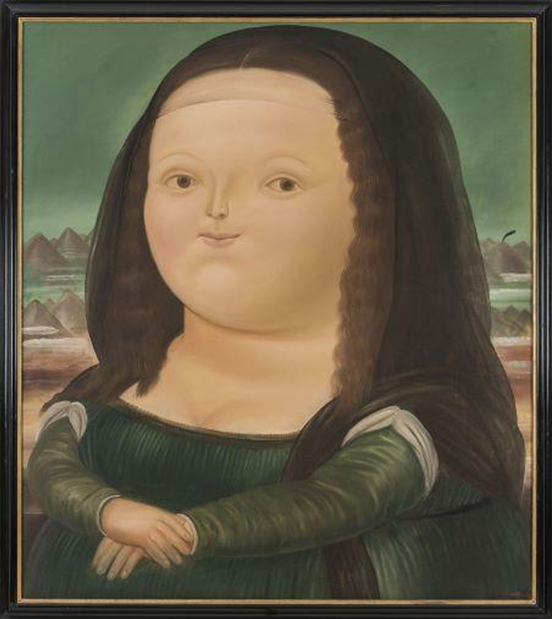
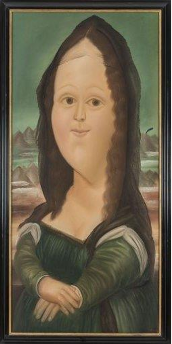
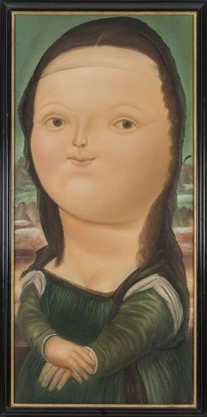
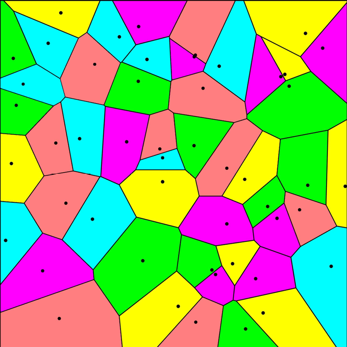

Course project : Software design and development, Prof. Julien CARDINAL, Xavier CLERC, September 2025 - January 2026
The project's objective is to implement an user-friendly software for Fast Marching
and its practical applications, such as edge detection and image segmentation.



Mona Lisa, Botero
Seam Carving for Image processing
Course project : First-year annual project, Tutor Pascal MONASSE, January - June 2025
Course project : Programming Workshop, Prof. Pascal MONASSE, February - June 2025
The Poisson Editor aims to reconstruct a part of an image, based solely on the gradient in this part, by solving differential equations.
Various linear equations for solving algorithms, such as the Fast Fourier transform and
the Gauss-Seidel method have been tested. Various practical applications, like changing the texture, illumination or colour
of a part of an image have been developped. Based on P.Pérez, M.Gangnet, A.Blake,
Poisson image editing,ACM Transactions on Graphics (TOG), vol. 22, no. 3,
2003

Voronoi diagram
TIPE (supervised personal initiative project), June 2023 - May 2024
Various algorithms for creating Voronoi diagrams have been implemented. The time and space complexities
of each algorithms have been analysed. Various heuristics in Voronoi game have been developped
![[github icon]](./images/github.png) /leocheng789
/leocheng789![[gitlab icon]](./images/gitlab.png) /leo-cheng
/leo-cheng